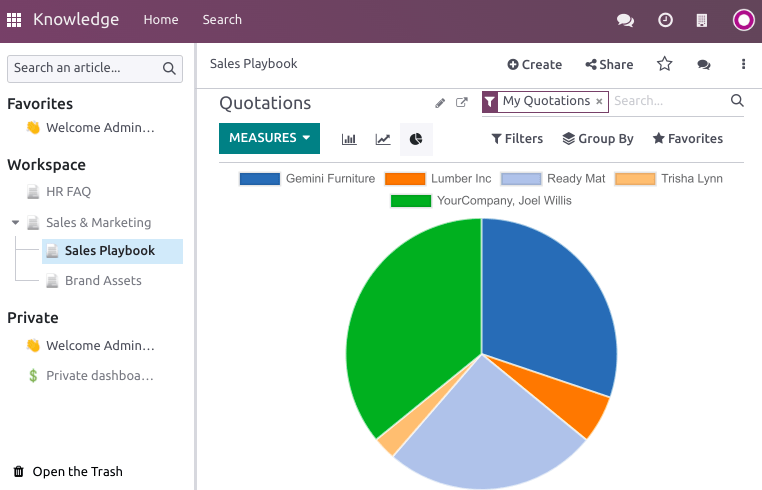

Articles editing¶
Add and style content¶
To start adding content, click anywhere on the page. Your cursor is automatically set to write the article’s first-level header. Once you are done writing the title, press enter on your keyboard to move to the next line.

Tip
Click Untitled on the left side of the top bar to automatically match your h1 (First-level header) title and the article’s name. To change the name of your article later, you must do it manually. To do so, click the name on the top bar and proceed to the modification.
Text editor¶
To stylize the text using the text editor, select the text to format.
Then, you can:
Change the style by clicking Normal. Doing so opens a dropdown menu with multiple styles to choose from (Normal, Code, Header 1 → Header 6, Quote);
Format the text. Click B to put it in bold, I to put it in italic, U to underline, and S to strikethrough;
Change the font color by clicking A or the background color by clicking the pencil icon:
To choose from a predefined theme color, click Theme and select the desired color.
To customize, click Solid and define a color using the wheel, by typing its hex code, or its RGBA values.
To use a gradient, click Gradient, choose a predefined gradient or click Custom to create a personalized gradient.
To change the text’s size, click the size number and select the desired size;
Click the lists icons to turn the paragraph into an unordered list, an ordered list, or a checklist;
Click the chain icon to insert or edit an URL link.

To format a whole paragraph, type / anywhere in the text. Doing so opens the powerbox, which
allows:
Changing a paragraph into lists (unordered, ordered, checklists).
Changing a paragraph into a header (1 → 6), normal text,
code, or quotes.
Cover pictures¶
You can customize your article by adding a cover picture and an icon. Hover above the h1 title and click Add Cover. A pop-up window opens to set a cover picture.
If your database and your Unsplash account are associated, the cover picture is automatically selected based on the article’s name. To modify it, hover over the picture to make the buttons appear, click Change Cover, and select another image.
Retrieve images from different sources:
Search the Unsplash database.
Enter a picture’s URL.
Upload an image from a computer.
To remove the cover, hover over it to make the buttons appear and click Remove Cover.
Note
To associate Unsplash with your database, please refer to Unsplash.
The articles are responsive, and so are the cover pictures. As a result, the images cannot be repositioned manually to fit a particular screen, as they automatically resize depending on the device.
Icons¶
To add an icon, hover above the h1 title and click Add Icon. Doing this sets a random emoji automatically. To change it, click it and select one from the emoji window. To remove it, proceed equally and click the red-circled x.
Note
The emoji is also displayed before the corresponding article in the side panel hierarchic tree.
Click the emoji on the side panel to change it without opening the related article.
Commands¶
To use a command, type / and open the powerbox. Type the command’s name or select from
multiple features to insert blocks, images, files, etc. Some of them, such as /Image or /Article
are common to all the apps, but others are inherent to the knowledge app and cannot be found or used
in any other application.
List of commands¶
Commands are divided into multiple categories depending on their use.
Command |
Use |
|---|---|
Bulleted list |
Create a bulleted list. |
Numbered list |
Create a list with numbering. |
Checklist |
Track tasks with a checklist. |
Table |
Insert a table. |
Separator |
Insert an horizontal rule separator. |
Quote |
Add a blockquote section. |
Code |
Add a code section. |
2 columns |
Convert into 2 columns. |
3 columns |
Convert into 3 columns. |
4 columns |
Convert into 4 columns. |
Command |
Use |
|---|---|
Heading 1 |
Big section heading. |
Heading 2 |
Medium section heading. |
Heading 3 |
Small section heading. |
Switch direction |
Switch the text’s direction. |
Text |
Paragraph block. |
Command |
Use |
|---|---|
Image |
Insert an image. |
Article |
Link an article. |
Command |
Use |
|---|---|
Link |
Add a link. |
Button |
Add a button. |
Appointment |
Add a specific appointment. |
Calendar |
Schedule an appointment. |
Command |
Use |
|---|---|
3 Stars |
Insert a rating over 3 stars. |
5 Stars |
Insert a rating over 5 stars. |
Command |
Use |
|---|---|
Table of Content |
Add a table of content with the article’s headings. |
Index |
Show the first level of nested articles. |
Outline |
Show all nested articles. |
Item Kanban |
Insert a kanban view of article items. |
Item List |
Insert a list view of article items. |
File |
Embed a file that can be downloaded. |
Template |
Add a template section that can be inserted in messages, terms & conditions, or description in other applications. |
Command |
Use |
|---|---|
Signature |
Insert your signature. |
Content from other apps¶
Knowledge allows to retrieve content views from other applications. To do so, go to the targeted app and create the desired view. Then, click and select an article. The view is inserted at the bottom of the selected article.
Example
To retrieve the view below, we created it by going to and inserted it by clicking and selecting the Sales Playbook article.
Important
Users who do not have access to the view will not be able to access it in Knowledge even though they have access to the article containing the view.